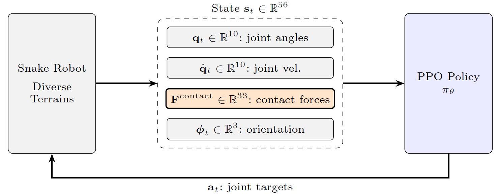
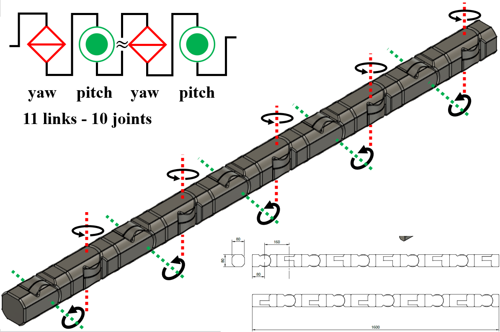
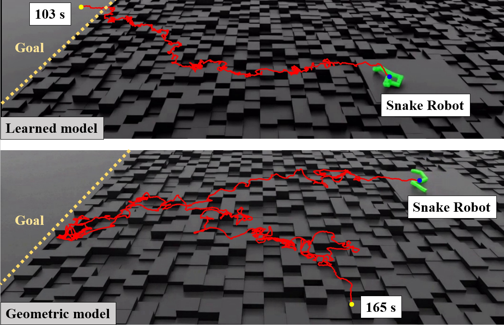

Abstract
Traditional gait design for snake robots has long relied on geometric models inspired by biological snakes. However, due to the inherent morphological discrepancies between biological snakes and robotic systems, these conventional models are not always optimal for snake robots. In this study, we conducted locomotion task training for a snake robot with ten redundant degrees of freedom (DoF) across random step fields. Experimental results demonstrated that the acquired policy autonomously emerged dynamic gaits capable of traversing unstructured terrains where conventional locomotion based on simple sine waves typically fails. The robot effectively utilized environmental protrusions as pivot points for propulsion, three-dimensionally transforming its body to overcome obstacles. Although these gaits deviate from mathematically predefined periodic motions, they exhibit rational characteristics approximating biological sidewinding as a direct consequence of physical constraints. Comparative experiments with geometric models validated that the learned policy possesses enhanced robustness and environmental adaptability in rugged terrains. Our findings suggest that locomotion strategies leveraging a robot’s unique embodiment can further enhance performance, extending the capabilities of snake robots beyond the conventional framework of pure biomimetics.
Overview Video
Overview video of the proposed snake robot locomotion learned through reinforcement learning.
Method
Robot Model
11-link snake robot with 10 alternating yaw/pitch joints. Total length: 1.6 m. Each link has a tactile sensor.
Observation Space (56-D)
10 joint positions + 10 joint velocities + 33 contact force components (11 links × 3 axes) + 3 global orientation angles. No predefined gait patterns.
Training
PPO via RSL-RL in NVIDIA Isaac Lab. 4,000 parallel environments across 4 procedurally generated terrain types. Target forward velocity: 0.5 m/s.

Fig. 2: Overview of the proposed framework. The policy πθ receives a 56-dimensional state st, in which per-link contact forces Fcontact (highlighted) enable the robot to sense physical terrain interactions and emerge adaptive gaits without a predefined template.
Results
Note: The figures below compare the learned RL policy against a conventional geometric sidewinding model (sinusoidal gait, A = 1.2 rad, ω = 0.50 Hz). Replace the placeholders with figures from the paper or simulation outputs.

Fig. 1: Overview of the snake robot (11 links, 10 joints).
Geometric sidewinding model
Joint angles on flat ground
Fig. 3(b): Joint angles of the geometric sidewinding model on flat ground. Constant periodic waveform across all joints. Place assets/figures/fig3b_geometric.png here.
Learned RL policy
Joint angles on flat ground
Fig. 3(a): Joint angles of the learned policy on flat ground. The policy dynamically adjusts amplitude and period of each joint in response to the immediate state. Place assets/figures/fig3a_learned.png here.

Fig. 4: Comparison of center-of-mass (CoM) trajectories between the learned RL policy and the geometric model. The RL policy exhibits greater robustness and adaptability.
Simulation Videos
Note: Videos showing the learned RL policy and the geometric sidewinding baseline across different terrain types.
Place video files in assets/videos/ to replace the placeholders.
Learned RL policy traversing rough terrain (random step fields). The robot autonomously adapts its gait to exploit environmental protrusions.
Conventional geometric sidewinding model (A = 1.2 rad, ω = 0.50 Hz) on rough terrain. Baseline comparison.
Learned RL policy on flat ground. The emergent gait approximates biological sidewinding as a consequence of physical constraints.
Geometric sidewinding model on flat ground. Maintains a constant periodic waveform across all joints.